Des microclimats que la réglementation ne voit pasMicroclimates the regulation does not see
La Réunion doit produire environ 172 500 logements d'ici 2050 (estimation 2021) sur 2 512 km² de relief allant jusqu'à 3 071 m, avec des écarts de pluviométrie d'un facteur trois entre stations.La Réunion needs about 172,500 new dwellings by 2050 (2021 estimate) on 2,512 km² of terrain rising to 3,071 m, with threefold rainfall differences between stations.
La RTAA DOM 2016, qui fixe les exigences thermiques et d'aération des logements neufs, ne distingue que trois tranches d'altitude.The RTAA DOM 2016 regulation, which sets thermal and ventilation requirements for new housing, only distinguishes three altitude bands.
Davidson et al. (2023) proposent un zonage climatique en 3 clusters et 12 sous-zones (Hauts, façade Est au vent, façade Ouest sous le vent). La question du mémoire :Davidson et al. (2023) propose a climate zoning of 3 clusters and 12 sub-zones (uplands, windward east, leeward west). The thesis question:
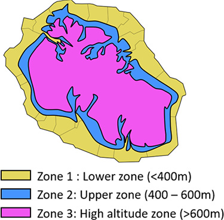
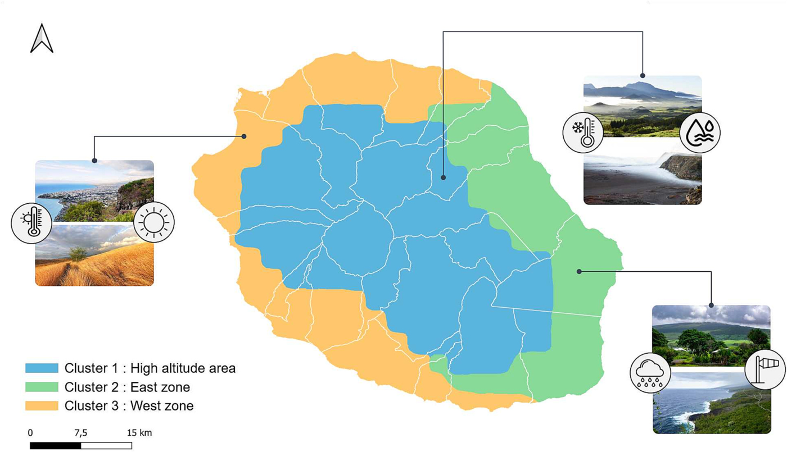
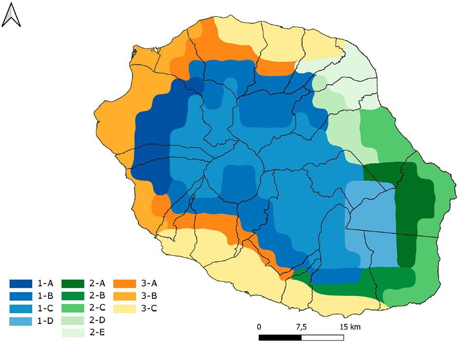
Une chaîne reproductible, du relevé météo au verdictA reproducible pipeline, from weather records to verdict
Tout est automatisé en Python pour que les simulations soient comparables et relançables : un même modèle, seules la météo et le levier testé changent.Everything is automated in Python so runs are comparable and re-runnable: one model, only the weather and the tested measure change.
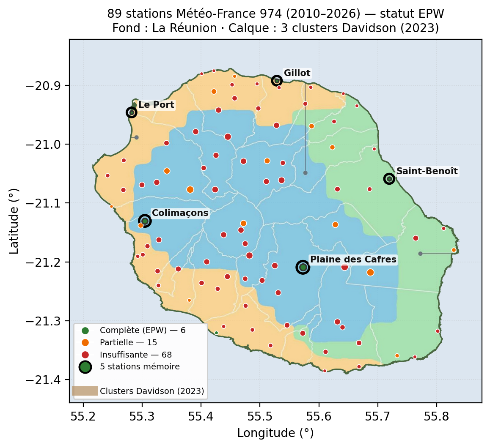
Le bâtiment de référenceThe reference building
Maison individuelle T4 de plain-pied, 77,88 m², plan en L (9,6 × 11,1 m), issue d'un catalogue commercial (Salon de l'habitat 2026) : pas la maison parfaite mais réaliste, une typologie courante, conforme au minimum RTAA DOM. Modélisée en 7 zones thermiques.Single-storey three-bedroom house, 77.88 m², L-shaped (9.6 × 11.1 m), taken from a commercial catalogue (Salon de l'habitat 2026): not a showcase project but the common typology, built to RTAA DOM minimums. Modelled as 7 thermal zones.
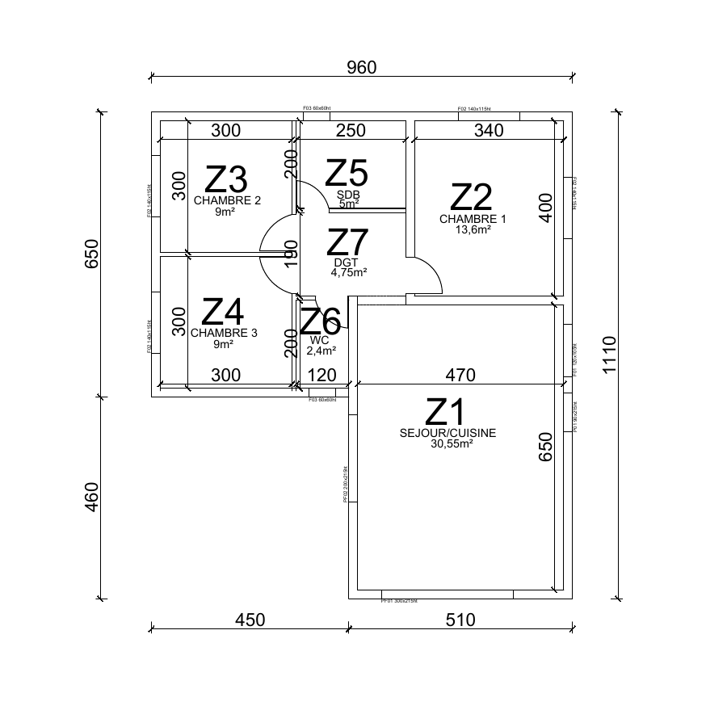
StationsStations
Plaine des Cafres (Hauts, C1-C), Colimaçons (Hauts, C1-A), Saint-Benoît (Est, C2), Le Port (Ouest sec, C3-B), Gillot (Nord-Est littoral, C3-C).Plaine des Cafres (uplands, C1-C), Colimaçons (uplands, C1-A), Saint-Benoît (east, C2), Le Port (dry west, C3-B), Gillot (north-east coast, C3-C).
Démarche en deux phasesTwo-phase approach
Le même T4 sur les 5 stations, sous deux scénarios d'occupation (actif, télétravail/retraite)The same house at 5 stations, under two occupancy scenarios (working, home-based)
Protection solaire, cool roof, ventilation renforcée, inertie, ossature bois + ouate, ventilation d'hygiène, isolation toiture, plancher, murs (+ brasseur d'air en post-traitement)Solar shading, cool roof, increased ventilation, thermal mass, timber frame + cellulose, hygiene ventilation, roof, floor and wall insulation (+ ceiling fan in post-processing)
Combinaisons ciblées par cluster, contrôle négatif, analyse de sensibilité OAT, test d'orientationCluster-targeted combinations, negative control, one-at-a-time sensitivity analysis, orientation test
| IndicateurIndicator | Ce qu'il mesureWhat it measures |
|---|---|
| TOC | Taux d'occupation en confort, modèle adaptatif tropical (Toe et Kubota, 2013)Share of occupied hours in comfort, tropical adaptive model (Toe and Kubota, 2013) |
| DH28 | Degrés-heures au-dessus de 28 °C - repère méthodologique RE2020 : 1 250 °C·hDegree-hours above 28 °C - RE2020 benchmark: 1,250 °C·h |
| Mould Index | Risque de développement de moisissures en triple lecture, du matériau résistant au plus sensible : Mint, Mbio, heures humides (Ojanen et al., 2010)Mould growth risk read three ways, from resistant to sensitive materials: Mint, Mbio, humid hours (Ojanen et al., 2010) |
| %h HR>80 | Part des heures à humidité relative supérieure à 80 %Share of hours above 80 % relative humidity |
À prescriptions identiques, trois pathologies différentesSame requirements, three different pathologies
Dans les Hauts, déficit thermique et humidité (52 % des heures au-dessus de 80 % d'HR à la Plaine des Cafres). Au Port, surchauffe sèche : 1 422 °C·h, au-dessus du repère RE2020. À Saint-Benoît, chaleur modérée et humidité persistante. Gillot reste partiellement protégé par les alizés.In the uplands, heat deficit and humidity (52 % of hours above 80 % RH at Plaine des Cafres). At Le Port, dry overheating: 1,422 °C·h, above the RE2020 benchmark. At Saint-Benoît, moderate heat with persistent humidity. Gillot stays partly protected by trade winds.
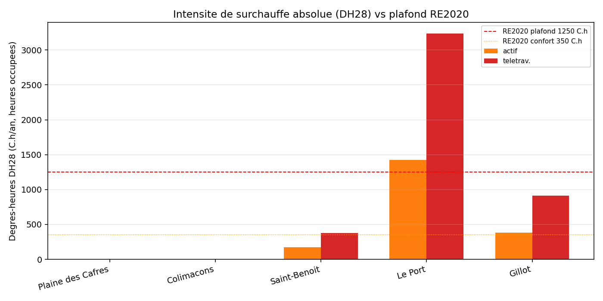
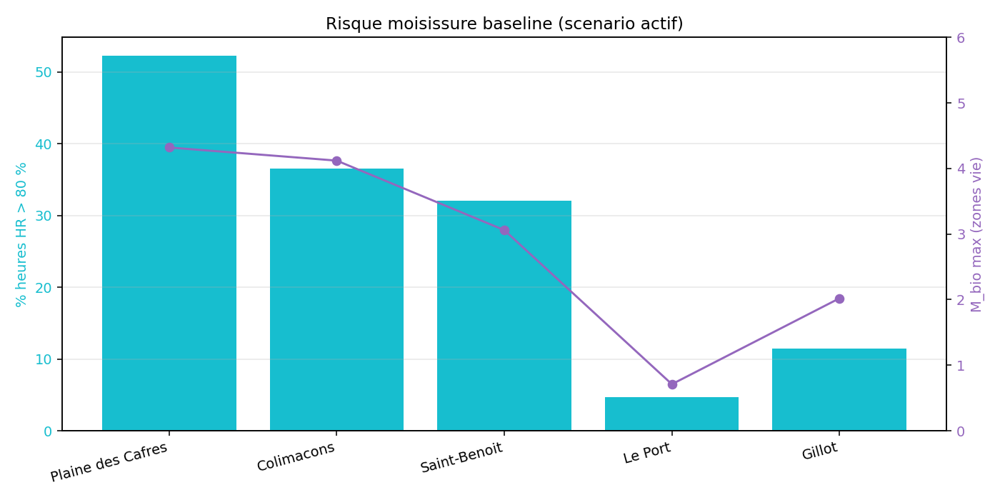
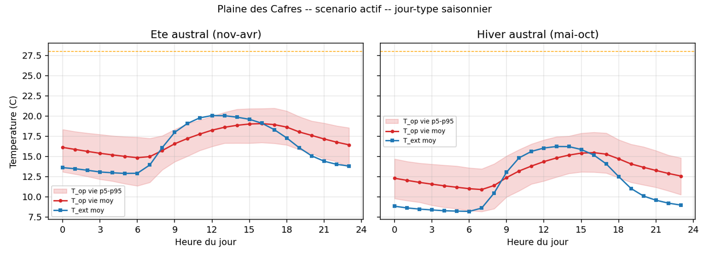
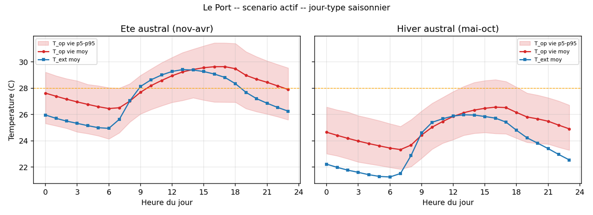
Un même levier peut améliorer ici et nuire là-basThe same measure can help here and harm there
L'isolation du plancher (XPS 100 mm) est le meilleur levier hygrothermique dans les Hauts et le pire levier thermique au Port, où elle ajoute 3 041 °C·h de surchauffe.
D'où quatre « régimes de correction », discriminés par l'écart d'humidité absolue intérieur–extérieur.Floor insulation (100 mm XPS) is the best hygrothermal measure in the uplands and the worst thermal one at Le Port, where it adds 3,041 °C·h of overheating.
Hence four “correction regimes”, discriminated by the indoor–outdoor absolute humidity difference.
| RégimeRegime | OùWhere | MécanismeMechanism | RésultatResult |
|---|---|---|---|
| Évacuation directeDirect removal | C3 - Le Port / Gillot | L'air extérieur sec évacue chaleur et humidité intérieuresDry outdoor air removes indoor heat and moisture | Combinaison ciblée : DH28 1 422 → 751 °C·h, sous le repère RE2020Targeted combination: DH28 1,422 → 751 °C·h, below the RE2020 benchmark |
| Fermer la fuite dominanteClose the dominant leak | C1-C - Plaine des Cafres | Le sol est la source principale d'humidité et de froidThe ground is the main source of moisture and cold | Isolation plancher + orientation Est : pic Mint 1,48 → 0,41 (÷ 3,6)Floor insulation + east orientation: peak Mint 1.48 → 0.41 (÷ 3.6) |
| Fermetures additivesAdditive closures | C1-A - Colimaçons | Plusieurs fuites : il faut fermer sol et mursSeveral leaks: floor and walls must both be closed | Isolation plancher + ossature bois/ouate : gain cumulé −1,13, supérieur à la somme des effets seulsFloor insulation + timber frame/cellulose: cumulative gain −1.13, more than the sum of single effects |
| Saturation passivePassive saturation | C2 - Saint-Benoît | Chaleur modérée + humidité persistanteModerate heat + persistent humidity | Aucune combinaison passive testée n'apporte de gain global : un module actif minimal est requis et des simulations complémentaires sont à menerNo passive combination gives an overall gain: a minimal active module is needed and further simulations are required |
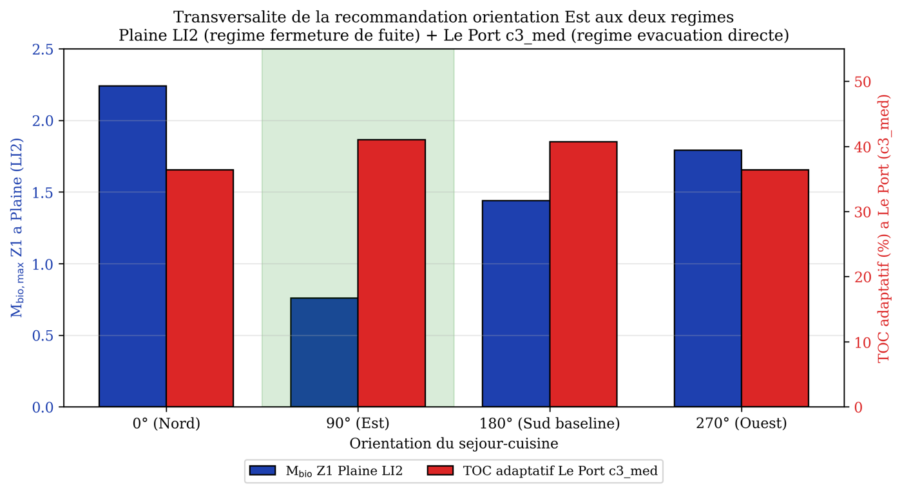
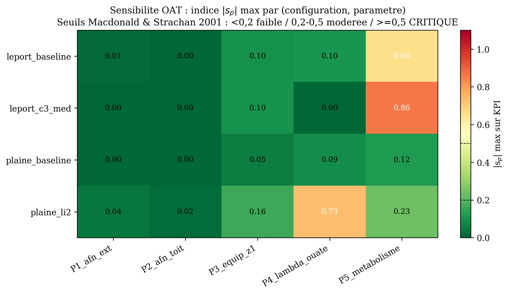
Ce que l'étude conclutWhat the study concludes
- Implantation : séjour à l'Est (90° ± 30°) dans les Hauts, Nord ou Ouest au Port.Siting: living room facing east (90° ± 30°) in the uplands, north or west at Le Port.
- Enveloppe : isolation sous dalle dans les Hauts (+ murs à Colimaçons), combinaison anti-surchauffe à l'Ouest, rien de lourd à l'Est.Envelope: under-slab insulation in the uplands (+ walls at Colimaçons), anti-overheating combination in the west, nothing heavy in the east.
- Ventilation : standard RTAA, ventilation d'hygiène renforcée à Saint-Benoît.Ventilation: RTAA standard, stronger hygiene ventilation at Saint-Benoît.
- Actif : seulement pour le cluster Est (VMC hygroréglable ou déshumidification ciblée).Active: only for the east cluster (humidity-controlled ventilation or targeted dehumidification).
- Aucune exigence sur le plancher dans la RTAA DOM : c'est le défaut le plus pénalisant en altitude. Piste : Rsol ≥ 2,5 m²·K/W au-dessus de 800 m.No floor requirement in the RTAA DOM: the most penalising gap at altitude. Proposal: Rfloor ≥ 2.5 m²·K/W above 800 m.
- Ventiler davantage peut aggraver le risque hygrothermique dans les Hauts quand l'air intérieur reste froid (non-monotonie de la ventilation).More ventilation can worsen hygrothermal risk in the uplands when indoor air stays cold (non-monotonic ventilation).
- En paroi ventilée humide, le comportement hygroscopique de l'isolant compte plus que sa résistance thermique.In a humid ventilated wall, the insulation's hygroscopic behaviour matters more than its thermal resistance.
Une esquisse fondatrice, pas une réponse ferméeA foundation, not a closed answer
- Modèle adaptatif extrapolé pour les stations fraîches d'altitude : lecture comparative, pas absolueAdaptive model extrapolated to cool upland stations: comparative, not absolute, reading
- Mould Index comparatif : ne remplace pas un modèle hygrothermique couplé (WUFI, Delphin)Comparative Mould Index: not a substitute for coupled heat-air-moisture modelling (WUFI, Delphin)
- OAT ne capte pas les interactions (méthode de Morris)OAT misses interactions (Morris method)
- Une seule géométrie (T4 en L), pas de chiffrage des surcoûtsSingle geometry (L-shaped house), no cost analysis
- Couplage hygrothermique et matériaux biosourcés en climat tropical humideHygrothermal coupling and bio-based materials in humid tropical climates
- Extension aux 12 sous-zones et aux fichiers météo 2050Extension to all 12 sub-zones and 2050 weather files
- Passage à l'existant : rénovation du parc de logementsExisting stock: housing retrofit
- Chiffrage coût / efficacité pour la maîtrise d'ouvrageCost-effectiveness for project owners
La chaîne de simulation Python est mon travail personnel et n'est pas publiée. Figures issues de mon mémoire, carte des clusters et sous-zones Davidson et al. (2023), licence CC BY-NC-ND 4.0.The Python simulation pipeline is my own work and is not published. Figures from the thesis, zone map: Davidson et al. (2023), CC BY-NC-ND 4.0 licence.
Ce que je retiens de cette première expérience de rechercheWhat I take away from this first research experience
Compétences acquisesSkills gained
- Simulation thermique dynamiqueConstruire, vérifier et exploiter un modèle EnergyPlus sur 485 casDynamic thermal simulationBuilding, checking and using an EnergyPlus model over 485 runs
- Automatisation PythonUne chaîne complète, de la donnée météo brute au tableau de verdict, relançable en un clicPython automationA full pipeline from raw weather data to verdict tables, re-runnable in one click
- Traitement de données réellesTrier 89 stations Météo-France incomplètes et justifier le choix des 5 retenuesReal-world dataSorting 89 incomplete Météo-France stations and justifying the 5 selected
- Rigueur scientifiqueBibliographie, analyse de sensibilité, discussion honnête des limitesScientific rigourLiterature review, sensitivity analysis, honest discussion of limits
Ma façon de travaillerHow I work
- AutonomieMener seul un sujet sur quatre mois, en organisant mon temps et en rendant compte à mon encadrantAutonomyRunning a four-month project alone, planning my time and reporting to my supervisor
- Douter de ses résultatsUn chiffre surprenant est souvent une erreur de modèle avant d'être une découverteDoubting resultsA surprising number is usually a model error before it is a finding
- Traduire pour le terrainTransformer 485 simulations en recommandations simples, utilisables par tousTranslating for practiceTurning 485 runs into simple recommendations everybody can use
- Le lien avec le chantierMes stages m'ont aidé à juger si une solution était réaliste à construireThe site linkMy internships helped me judge whether a solution was realistic to build
Recherche de stage du 1er mars au 1er septembre 2027Available 1 March – 1 September 2027
Je cherche un stage de fin d'études de 6 mois en bureau d'études thermique / énergie, chez un maître d'ouvrage ou en collectivité - à La Réunion (Sud / Ouest) possible de déplacement. Idéalement dans la continuité de mon mémoire. Voir mon mémoireSee my thesis → I am looking for a 6-month end-of-studies internship in a thermal/energy consultancy, with a project owner or a local authority — in La Réunion (South/West) or elsewhere, ideally building on my thesis